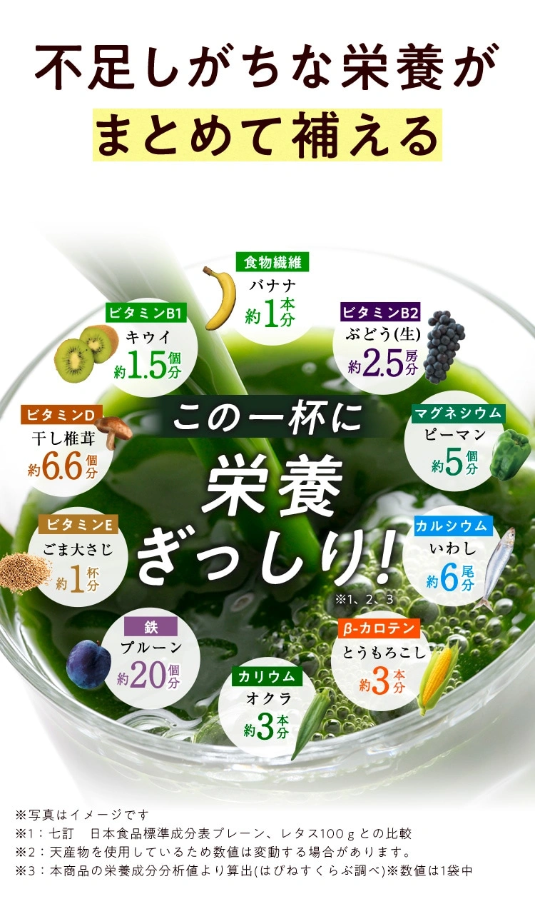

集めた栄養を、毎日の一杯に。
甘くて、おいしい。
だから、つづく。
野菜の栄養も、乳酸菌も。
抹茶ラテ風のやさしい青汁。

いきいき乳酸菌とおいしい青汁W
はぴねすくらぶ乳酸菌201億個配合
素材にこだわる16種類の国産素材
1杯あたり約50円初回限定価格より算出
※1杯1袋として、初回限定価格1,490円（税込）÷30袋で算出。送料別。
初回限定半額1,490円（税込）＋送料330円お試し内容を見る01
「青汁って苦そう」
そう思っているあなたへ。
毎日、飲みたくなる
おいしさ。
ひと口で、
抹茶ラテ風のやさしい甘さ。
有機栽培の国産抹茶と
甘味ハーブ「ステビア」を配合。
毎日続けてほしいから、味にもこだわりました。

02
おいしいだけで、終わらない
乳酸菌も、野菜の栄養も。
この一杯に。
2種類の乳酸菌を配合
合計201億個
ヨーグルト約20個分

EC-12200億個

ラクリス®1億個
乳酸菌の画像はイメージです
EC-12
免疫細胞の働きをサポートする。
ラクリス®
生きたまま腸まで届き、腸内環境を整える。
ビタミン・カロテノイド
α-カロテン（ビタミンA）／ β-カロテン（ビタミンA）／ ビタミンC ／ ビタミンD ／ α-トコフェロール（ビタミンE）／ γ-トコフェロール（ビタミンE）／ ビタミンB1 ／ ビタミンB2 ／ ビタミンK ／ ナイアシン ／ 葉酸 ／ パントテン酸 ／ ビオチン
ミネラル
鉄分 ／ カルシウム ／ カリウム ／ マグネシウム ／ 亜鉛 ／ ナトリウム ／ リン ／ 銅 ／ マンガン
食事で不足しがちな栄養を、
おいしい習慣でサポート。
03
毎日の一杯だから、素材も大切に
選び抜いた、
16種類の国産素材。
九州産大麦若葉、島根産はとむぎ若葉。
日本の素材を、ぎゅっと詰め込みました。
九州産大麦若葉
島根産はとむぎ若葉

※1：七訂 日本食品標準成分表プレーン、レタス100gとの比較
※2：天然物を使用しているため数値は変動する場合があります。
※3：本商品の栄養成分分析値より算出（はぴねすくらぶ調べ）。数値は1袋中。
保存料不使用着色料不使用香料不使用

忙しい朝にも。
水にサッと。
手間いらず。
溶けやすい粉末タイプ。
毎日の一杯を、
もっと気軽に。
おいしい毎日、ここから。
まずは1箱、
試してみませんか？
初めての方限定のお試しキャンペーン

いきいき乳酸菌とおいしい青汁W
通常価格 2,980円（税込）初回半額
1,490
円税込
送料330円合計1,820円（税込）
✓ 定期購入ではありません
初回限定・お一人様1回限り半額でお試しする公式サイトへ購入条件・商品詳細は公式サイトでご確認ください。
ゲームの結果にかかわらずお申し込みいただけます。